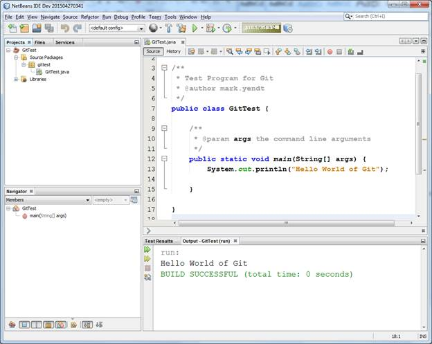
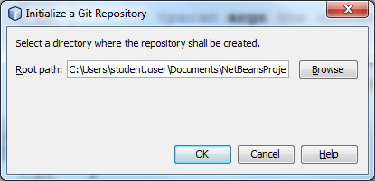
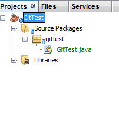
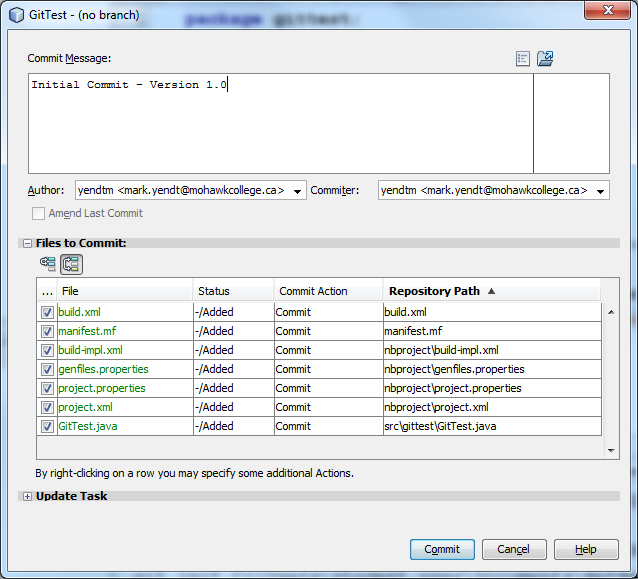
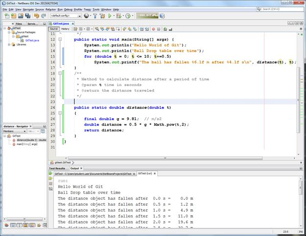
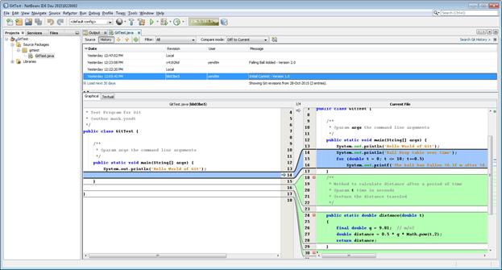

Using Git with NetBeans
- Start NetBeans
- Create a new Project (called GitTest)
- The main method will simply be a Hello World program. Add a statement to output Hello World of Testing to the console.
- Run the program and confirm the output to the screen as shown below:

- Now we are going to create a repository to track Changes to the project. To do this we must first set-up a Git repository. NetBeans includes Git so it does not need to be installed on the local machine. You may want to download Git to use for other places where you need source code control. To initialize the Git repository(repo) right click on the project in the Project Pane and select the Versioning menu item and then Initialize Git repository. Once selected you should see a folder selection Dialog as shown below:
 By default this will have the Root path set the project folder location. This default should be used where possible as it will then allow changes to be tracked when the project is moved from machine to machine (as long as Git in installed). Git also supports remote repositories which is very useful creating a project in a single location and then connecting to it from multiple locations. See GitHub.

The project window will now appear a little different. The source file will be in Green and a small blue icon will appear beside each item. This indicates that all the components are part of the Git repository and none of the items have been Committed.">
- After initialization we will Commit the changes to the repository. To do this right click on project and use the Git menu option and select Commit. Set the Commit Message to the text below and ensure that the Author data is correct. Modify it to be your name at this point. Click the Commit button to place the code into the Repo.

- Your project is now in the repo and now you can use this to track project changes over time. To do this let's add a method to the main program. See the screen below for the modified program. Modify your code and obtain the output below:

- You will notice that within the NetBeans environment lines are marked with blocks of green (new text that has not been committed) and blue blocks (modified and not committed) text. This allows to see changes before you commit. All changes will be saved in your local files but the changes will not be persisted in the repository until you commit the changes. Now commit the change and name it "Falling Ball Added Version 2.0".
You should see both commits. To see the changes between the current version select the History tab of the source code and select the initial commit, you will see the changes between the two versions highlighted as shown below:

Git and source code control in general provides a powerful way to review changes and also log the history of changes to the source code. Git has many other features as well for creating branches and merging branches back in to the project. You may want to get a further overview of Git from https://git-scm.com/book/en/v2/Getting-Started-Git-Basics.